1

AI ROUTING
Engineering hardware that thinks. Designing software that ships.
Embedded · IoT · AI/ML · Web · Cybersecurity — built on Android, from Wardha.

AI ROUTING
IOT / EMBEDDEDDual water-level monitoring system with HC-SR04 ultrasonic sensors, automated pump switching, and alert alarms.

CLEANTECHDual-axis light-tracking solar array maximizing photovoltaic panel efficiency using LDR differential sensors and stepper control.
Full developer ecosystem configured on Android phone via Termux. Code, debug, commit and push without a laptop.
Automated soil moisture sensing system with precision solenoid water valves and hysteresis threshold control to prevent over-watering.
Microservice API routing queries dynamically across Anthropic, OpenAI, and Groq endpoints with fallback failover and SQLite logging.
Hardware interrupt-driven precision digital stopwatch and event counter multiplexed across 7-segment LED displays.
Turnkey shell configuration, automated Git hooks, micro-editor bindings, and battery-optimized build scripts for Android CLI dev.
2nd-year B.Tech Electronics & Communication Engineering with a minor in Computer Science at TGPCET, RTMNU. Based in Wardha, Maharashtra.
Arduino, 8051, Flask and LLM APIs. Ships real projects with working hardware and live servers instead of only reading theory.
Preparing for GATE EC while pursuing high-impact internships in embedded systems, IoT, AI/ML, and software engineering.
No laptop. Everything is written, tested and pushed directly from an Android smartphone with Termux. Pure resilience and craftsmanship.
Status: Completed · Daily Active
Status: Completed · Prototypes Built
Status: In Progress · Flask & AI
Status: In Progress · OOP & Core
Status: In Progress · Daily Practice
Status: Up Next · Core Focus
